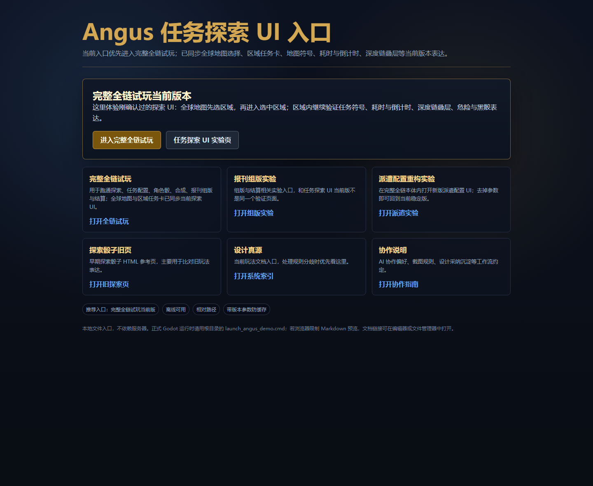
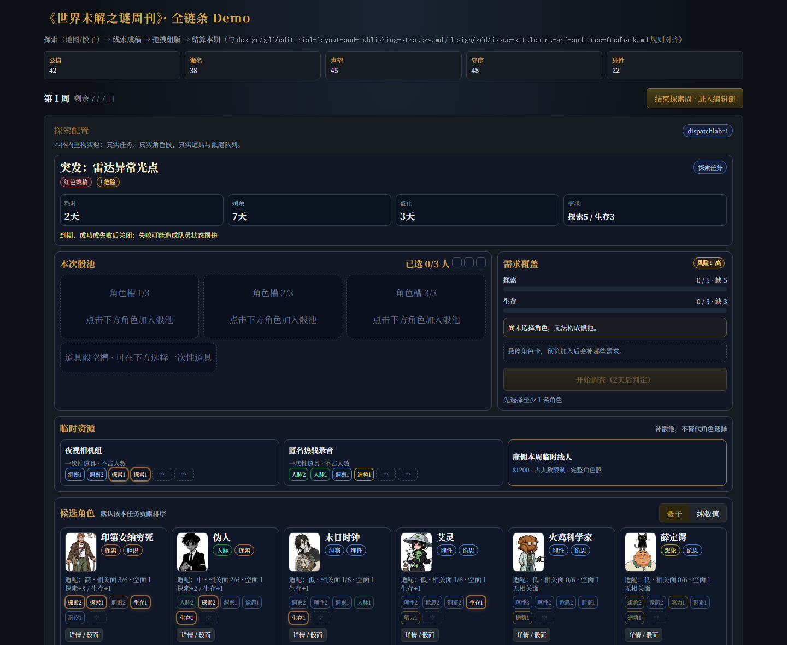
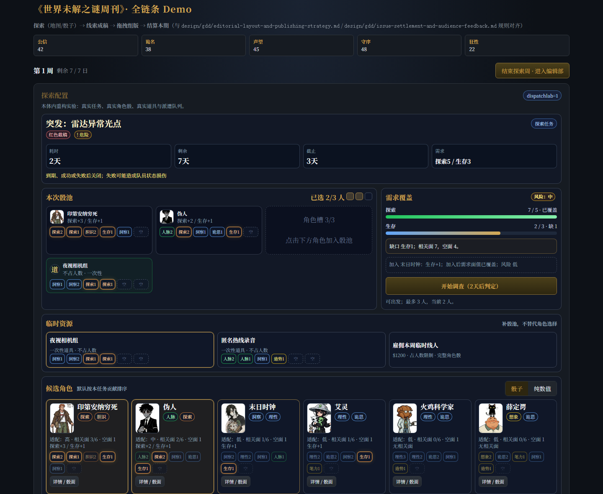

01 · 根入口中的派遣配置重构实验
根目录入口新增“派遣配置重构实验”，明确说明这是完整全链本体内的实验模式，不是独立假页面。

本页汇总 2026-05-13 的本体内派遣配置 UI 实验。入口参数为 ?dispatchlab=1；去掉参数即可回到当前稳定版。
dispatchlab=1 参数即可关闭实验 UI。根目录入口新增“派遣配置重构实验”，明确说明这是完整全链本体内的实验模式，不是独立假页面。

新版派遣页顶部固定任务摘要，中部把“本次骰池”和“需求覆盖”作为主判断区；此时没有角色，开始调查按钮不可用。

选入 2 名角色与夜视相机组后，需求覆盖、缺口和风险实时更新；页面隐藏浮动“下一天”，让主操作集中到“开始调查”。
